Pine Straw & Mulch
Latest article
Aug 18, 2026 · 4 min read
Real vs. Artificial Pine Straw: Which Actually Saves You Money?
Natural pine straw looks cheap upfront but costs more over time in labor and re-strawing. See how artificial pine straw stacks up — and where it actually pays off.
Read article →
ALL ARTICLES
Browse by topic.
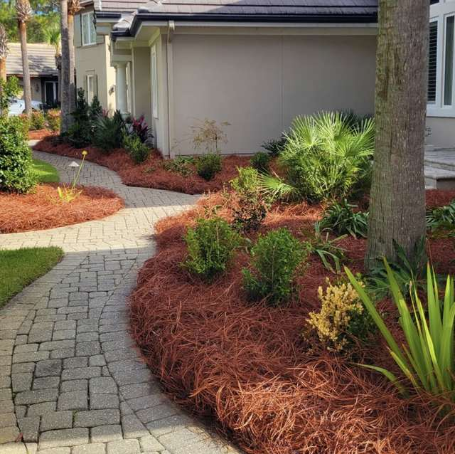
Pine Straw & MulchAug 18, 2026 · 4 min read
Real vs. Artificial Pine Straw: Which Actually Saves You Money?
Natural pine straw looks cheap upfront but costs more over time in labor and re-strawing. See how artificial pine straw stacks up — and where it actually pays off.
Read article →
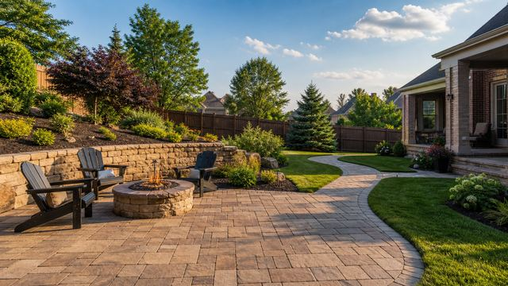
HardscapingAug 13, 2026 · 6 min read
Patios, Walkways, and Retaining Walls: Hardscaping 101 for Louisville Homeowners
Kentucky's clay soil and freeze-thaw winters can wreck a poorly built patio. Here's what Louisville homeowners need to know about patios, walkways, and retaining walls before hiring a contractor.
Read article →
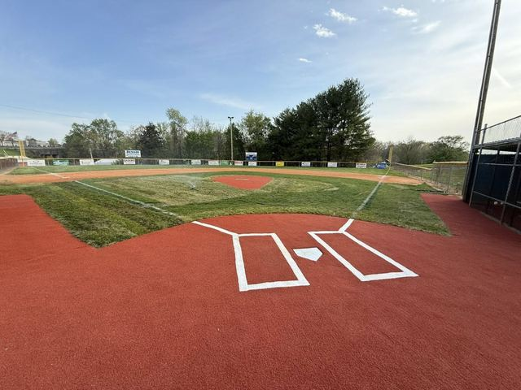
Custom TurfJul 30, 2026 · 4 min read
Custom Turf Technology Trends for 2026
Explore the latest custom turf technology trends for 2026 and what homeowners should know before choosing artificial grass.
Read article →
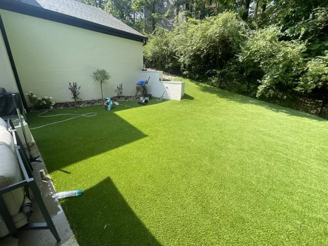
Local GuidesJul 23, 2026 · 4 min read
Toledo Landscaping Services Guide 2026
A 2026 guide to landscaping services for Toledo, Ohio homes — tips on turf, hardscaping, and outdoor upgrades from EternaTurf.
Read article →
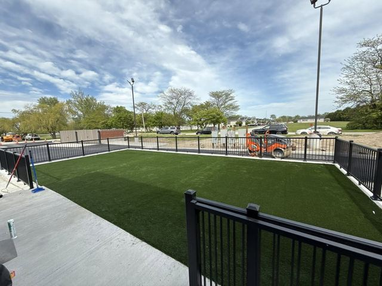
Pet TurfJul 16, 2026 · 3 min read
Best Artificial Turf for Tampa Pet Owners
Searching for a trusted artificial turf company in Tampa? See why pet owners choose EternaTurf for safe, durable, low-maintenance lawns.
Read article →
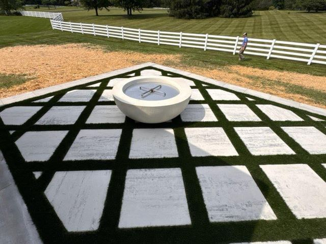
Local GuidesJul 9, 2026 · 4 min read
Artificial Grass Tampa: Top Benefits
Discover the top benefits of artificial grass for Tampa homeowners — water savings, low maintenance, and a lush lawn all year round.
Read article →
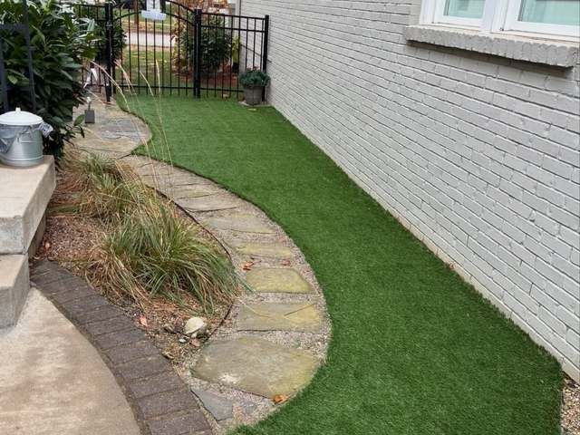
Maintenance & CareJul 2, 2026 · 5 min read
Artificial Turf Tampa: Install & Maintain Guide
A complete guide to installing, maintaining, and enjoying artificial turf in Tampa — everything homeowners need for a lasting lawn.
Read article →
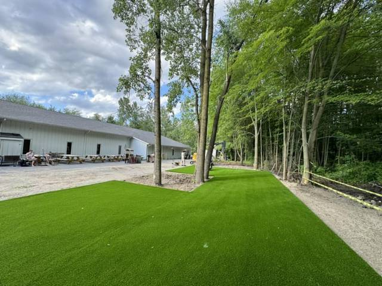
Local GuidesJun 25, 2026 · 4 min read
Sarasota Artificial Grass Guide
Everything Sarasota homeowners need to know about artificial grass — durability, cost, maintenance, and choosing the right installer.
Read article →
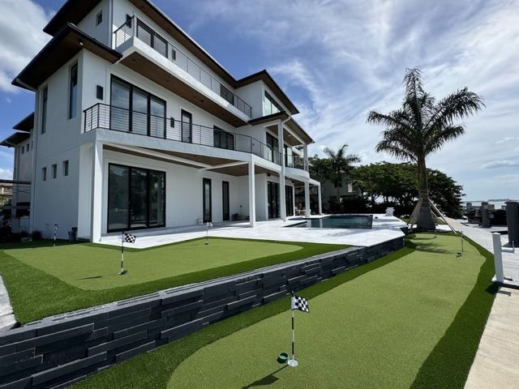
Playground TurfJun 18, 2026 · 4 min read
Safe & Long-Lasting Playground Artificial Turf Sarasota FL
Choosing the right playground artificial turf Sarasota FL , makes a lasting difference for safety, enjoyment, and maintenance. Artificial turf offers a...
Read article →
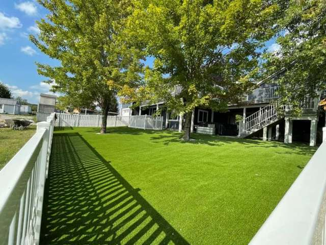
Local GuidesJun 11, 2026 · 5 min read
Trusted Artificial Turf Installation Near Me Prospect KY Now
Get trusted artificial turf installation in Prospect, KY. EternaTurf delivers durable, low-maintenance lawns built to last.
Read article →
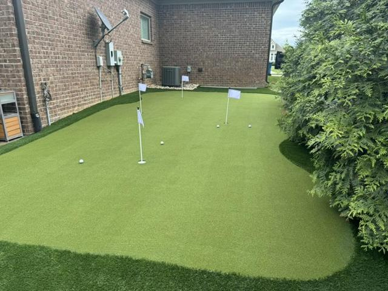
Putting GreensJun 4, 2026 · 4 min read
Are Putting Greens Worth It for Your Backyard Homes in 2026?
A backyard putting green gives you a place to practice, entertain, and enjoy your outdoor space year-round. If you're considering installing one in Prospect,...
Read article →
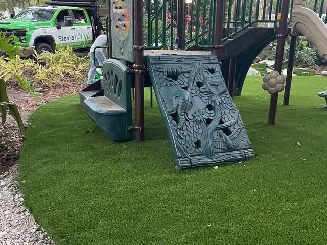
Playground TurfMay 28, 2026 · 5 min read
Which Playground Turf Is Best for Safety and Installation?
Choosing the right playground turf with EternaTurf makes a big difference for safety, durability, and enjoyment. From schools to backyards, knowing what to...
Read article →
Pet Turf
May 21, 2026 · 4 min read
How to Choose Pet Turf for Your Dogs
Learn how to choose, install, and maintain pet-friendly turf for your dogs — durable, safe, and easy-to-clean options from EternaTurf.
Read article →
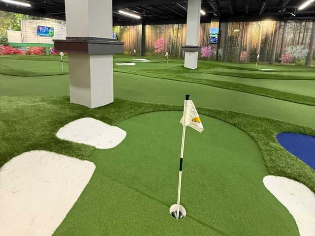
Sports TurfMay 14, 2026 · 6 min read
Why Sports Turf Matters for Safe and Durable Playing Fields
Discover why sports turf matters for athlete safety, and performance and how expert installation ensures long‑lasting, safe fields.
Read article →
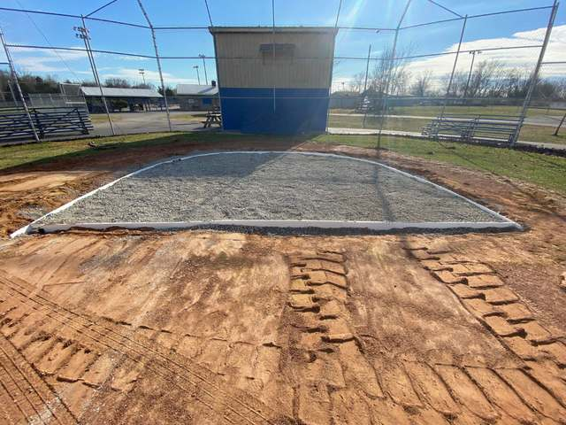
Sports TurfMay 7, 2026 · 6 min read
What Is Sports Turf and Why Is It Better Than Natural Grass?
Discover what sports turf is, its benefits over natural grass, and how to get durable, safe, and low-maintenance artificial turf installed today.
Read article →
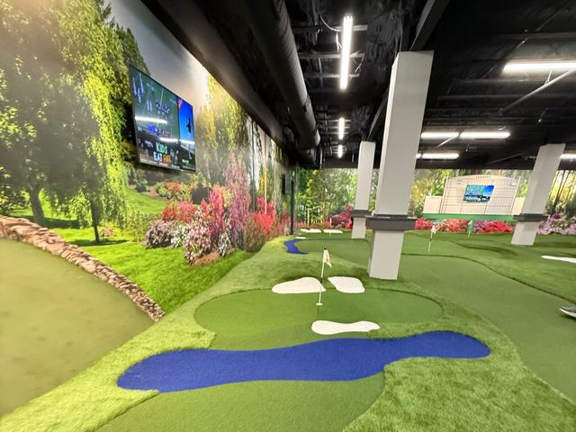
Custom TurfApr 30, 2026 · 7 min read
What Is Custom Turf and Is It Really Worth It for Your Yard?
Learn what custom turf is, how it works, its benefits, and why custom projects create lasting, low-maintenance outdoor spaces.
Read article →
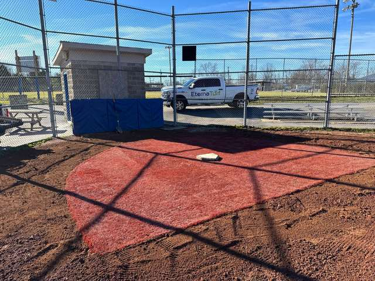
Sports TurfApr 23, 2026 · 7 min read
Why Is Sports Turf Safer for Athletes Than Natural Grass?
Learn how sports turf offers a safer, durable playing surface than natural grass, protecting athletes and enhancing field performance.
Read article →
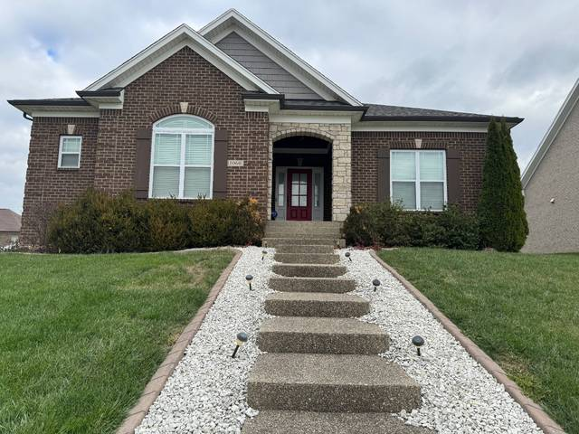
Pet TurfApr 16, 2026 · 6 min read
Key Benefits of Pet Turf for Dogs: Safe, Clean, and Durable
Discover the benefits of pet turf for dogs: clean, safe, durable, and low-maintenance. Perfect for happy, healthy pets year-round.
Read article →
 Landscape Turf
Landscape TurfApr 9, 2026 · 7 min read
What Is Landscape Turf? A Guide for Homeowners and Designers
Discover what landscape turf is, its benefits, types, and installation tips for homes and designs. Explore now for smarter planning.
Read article →
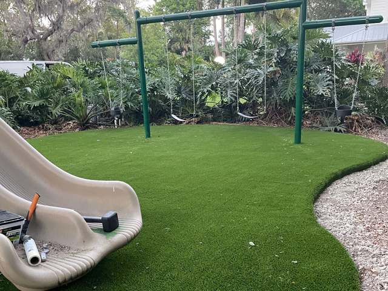
Playground TurfApr 2, 2026 · 5 min read
How Playground Turf Improves Safety and Fall Protection
Learn how playground turf improves safety and fall protection for children. Upgrade your play area for a safer, durable space kids will enjoy!
Read article →
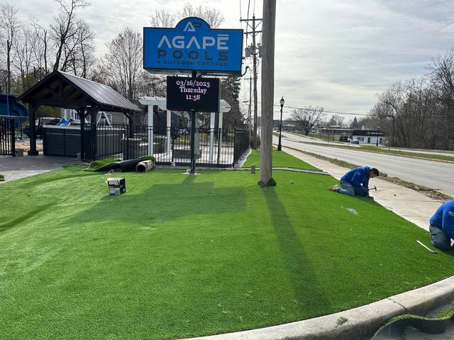
Putting GreensMar 26, 2026 · 6 min read
How Long Do Artificial Putting Greens Really Last Outdoors?
Discover how long putting greens last outdoors, lifespan factors, and tips to maintain the best artificial greens. Learn more today!
Read article →
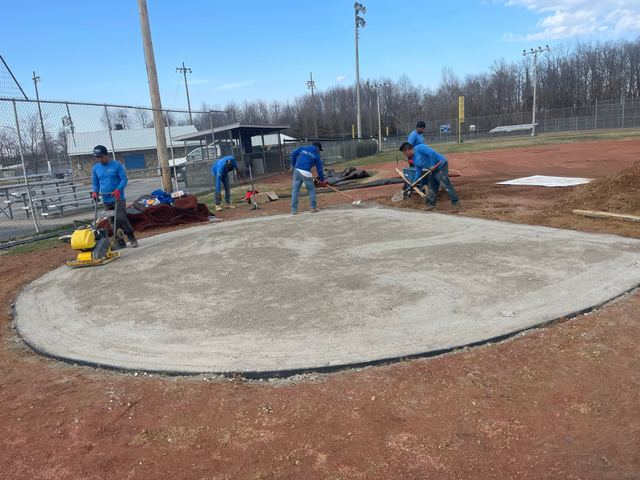
Custom TurfMar 19, 2026 · 6 min read
What Is Custom Turf?
Learn what custom turf is, why homeowners choose it in 2025, and how custom artificial turf creates low-maintenance, durable outdoor spaces.
Read article →
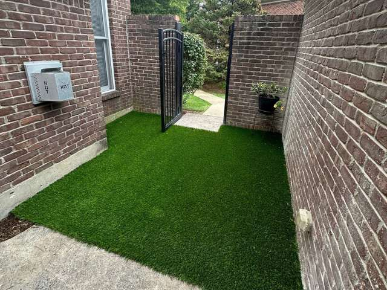
Pet TurfMar 12, 2026 · 6 min read
How to Maintain Artificial Grass for Pets and Keep It Clean
Learn how to keep artificial grass for pets clean, safe, and odor-free with practical tips, simple maintenance advice, and expert guidance.
Read article →
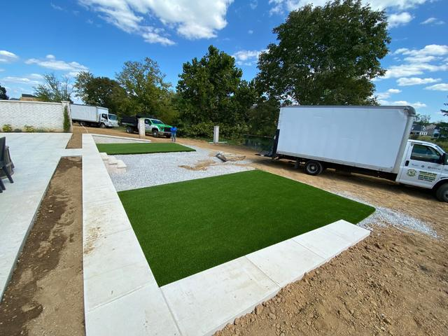
Local GuidesMar 5, 2026 · 6 min read
How Landscaping Louisville KY Can Improve Your Backyard Turf
Discover how landscaping Louisville KY with artificial landscape turf creates a low-maintenance, eco-friendly, and beautiful backyard all year round.
Read article →
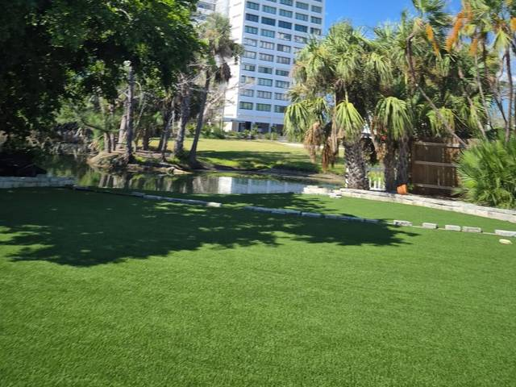
Playground TurfFeb 26, 2026 · 5 min read
Why Choose Playground Artificial Turf for Safe Kids’ Play
Learn the benefits of playground artificial turf, safety features, durability, cost advantages, and why it’s a smart choice for play areas in 2025.
Read article →
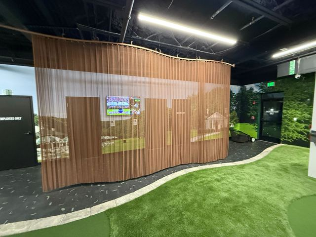
Putting GreensFeb 19, 2026 · 6 min read
Best Backyard Putting Greens for 2025 at Home and Garden
Looking for the best backyard putting greens in 2025? Compare turf options, features, costs, and designs. Click here to find out!
Read article →
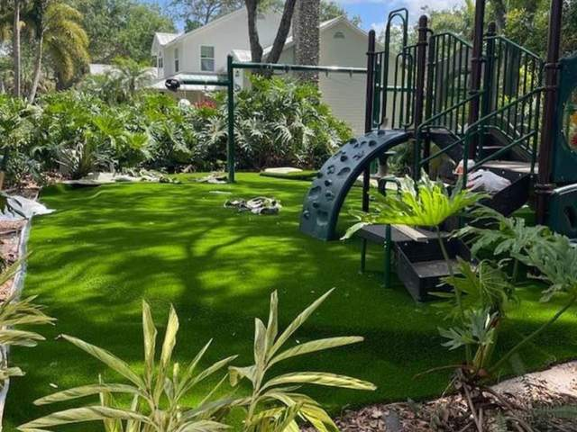
Playground TurfFeb 12, 2026 · 5 min read
Is Artificial Playground Turf Easy to Maintain and Safe?
Artificial playground turf provides a safe, durable, low-maintenance, non-toxic, and UV-resistant surface perfect for play areas. Read more!
Read article →
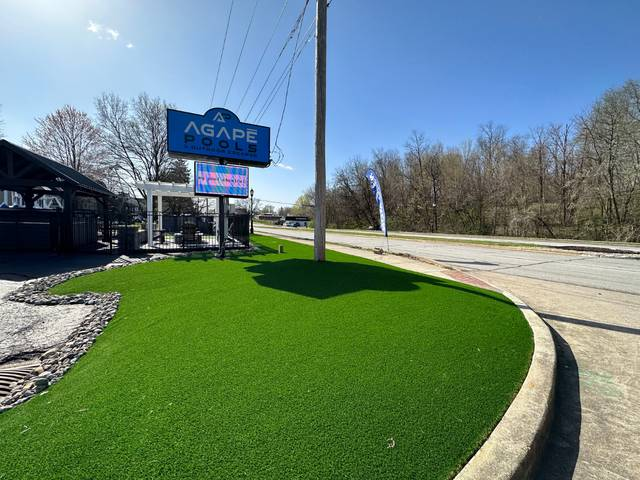
Putting GreensFeb 5, 2026 · 6 min read
Are Artificial Putting Greens Easy to Maintain and Care For?
Learn how easy artificial putting greens are to maintain with expert care tips, lifespan info, and benefits for your home or practice area. Read more!
Read article →
 Landscape Turf
Landscape TurfJan 29, 2026 · 5 min read
Turfing Landscape: Step-by-Step Guide for Your Perfect Yard
Learn how to turfing landscape with artificial grass easily. Step-by-step guide, cost tips, and backyard design ideas in Prospect, KY.
Read article →
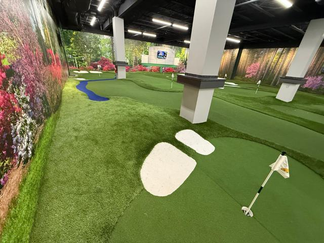
Custom TurfJan 22, 2026 · 5 min read
What Is Custom Turf and How Do You Professionally Install It?
Learn what custom turf is and how to install it professionally. Discover offers expert artificial turf solutions in Prospect, KY.
Read article →
 Landscape Turf
Landscape TurfJan 15, 2026 · 6 min read
What Are the Environmental Benefits of Artificial Grass?
Discover the environmental benefits of artificial grass, including water savings, maintenance reduction, and sustainable landscaping solutions.
Read article →
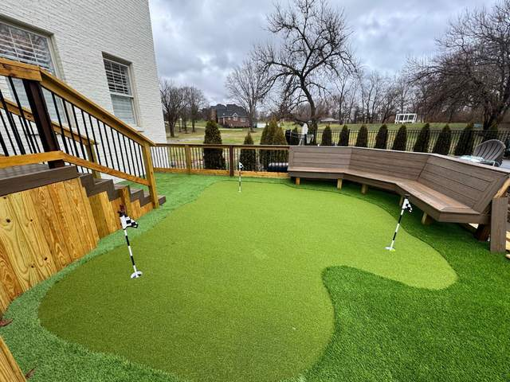
Sports TurfJan 8, 2026 · 7 min read
How Does Sports Turf Impact Performance and Play Quality?
Discover how sports turf influences athletic performance, safety, and play quality. Learn about artificial turf benefits for fields in Prospect, KY.
Read article →
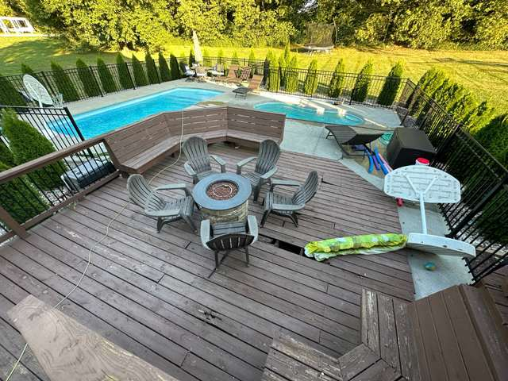
Landscape TurfJan 1, 2026 · 7 min read
How to Pick the Best Right Artificial Turf for Your Yard
Learn how to choose the right artificial turf for your yard, including types, cost, and durability. Get started on creating your perfect lawn today!
Read article →
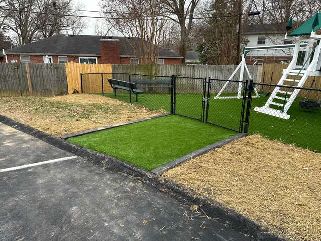
Playground TurfDec 25, 2025 · 6 min read
How Safe Is Artificial Grass for Playground Louisville KY?
Safe, durable artificial grass for playground Louisville KY. Discover low-maintenance turf that protects kids and withstands heavy play. Read more!
Read article →
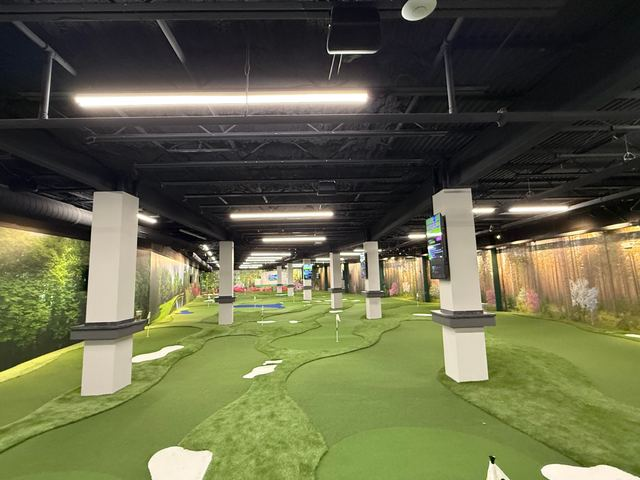
Sports TurfDec 18, 2025 · 6 min read
Is Artificial Sports Turf Good for Multipurpose Fields?
Learn if artificial sports turf is ideal for multipurpose fields. Discover key benefits, performance, safety, and expert insights today. Read more!
Read article →
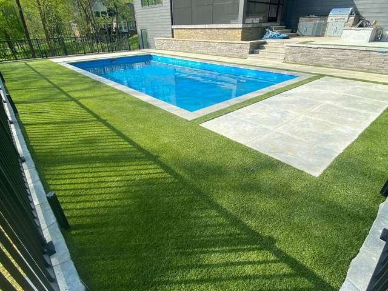
Landscape TurfDec 11, 2025 · 6 min read
Ready to Refresh Your Outdoor Space with Landscape Turf?
Upgrade your outdoor area with durable, low-maintenance landscape turf. Discover its benefits, design ideas, and expert installation tips. Read more!
Read article →
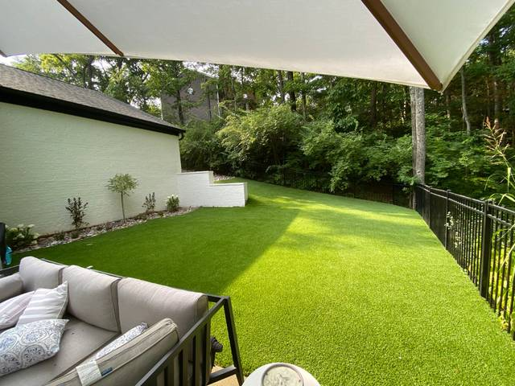
Custom TurfDec 4, 2025 · 5 min read
What Is Custom Turf Installation, Maintenance, and Benefits?
Discover the benefits of custom turf installation, maintenance advice, and the long-lasting advantages of artificial grass. Read more!
Read article →
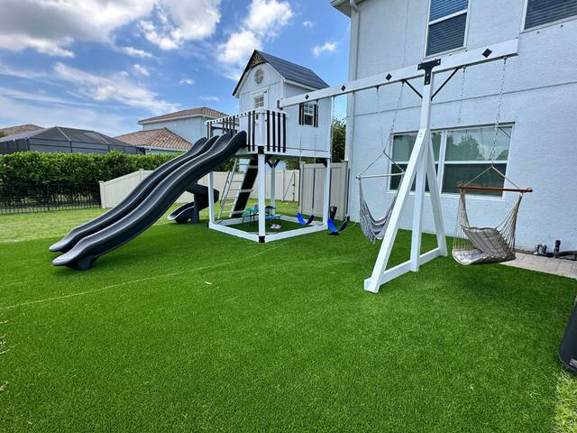
Pet TurfNov 27, 2025 · 5 min read
Artificial Pet Turf Dog-Friendly, Safe and Durable Yards
Discover safe, durable artificial pet turf for homes. Learn about installation, maintenance, and dog-friendly options for your yard.
Read article →
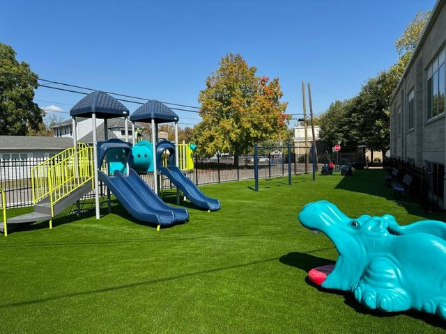
Landscape TurfNov 20, 2025 · 6 min read
Stay Cool with Artificial Landscape Turf Built for Heat
Discover high-quality artificial landscape turf built for hot, humid climates. Learn how premium turf solutions deliver lasting beauty.
Read article →
Sports Turf
Nov 13, 2025 · 6 min read
How to Choose the Best Artificial Sports Turf for Your Field
Learn how to choose the best artificial sports turf for your field, materials, cost, safety, and maintenance tips for lasting performance. Read more!
Read article →
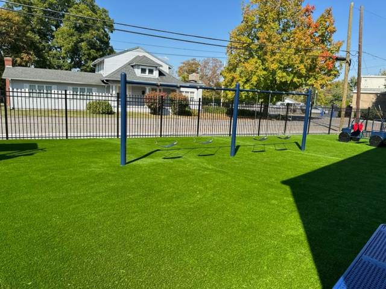
Putting GreensNov 6, 2025 · 6 min read
How Can You Install an Artificial Putting Greens at Home?
Learn how to install artificial putting greens in your backyard with a step-by-step guide. Tips on planning, installation, and maintenance. Read more!
Read article →
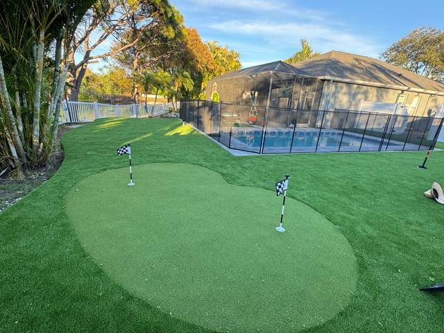
Playground TurfOct 30, 2025 · 5 min read
Which Artificial Playground Turf Is Safest and Most Durable
Discover the safest and most durable artificial playground turf for your school or park in Prospect, KY with expert tips and guidance. Read more!
Read article →
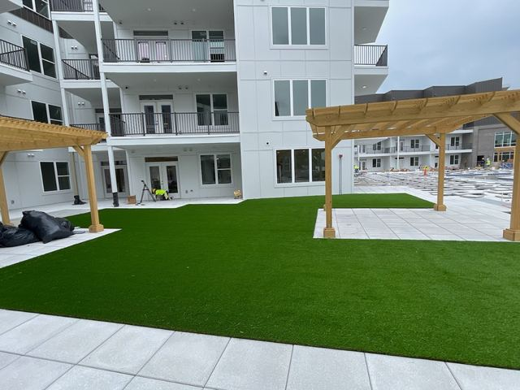
Pet TurfOct 23, 2025 · 6 min read
How to Choose the Best Artificial Pet Turf for Your Garden
Get expert tips to choose the best artificial Pet turf for your garden with pet-friendly options, maintenance advice, and local installation. Read more!
Read article →
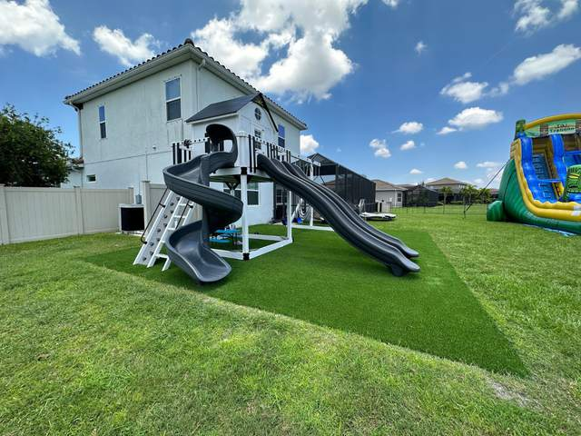
Playground TurfOct 16, 2025 · 5 min read
Artificial Playground Turf 2025 A Complete Guide & Benefits
Discover artificial playground turf benefits, safety ratings, and installation steps in 2025. For durable, and eco-friendly play areas.
Read article →
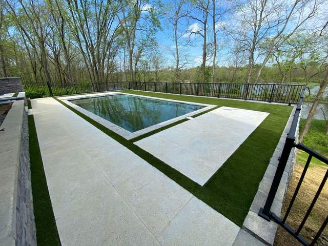
Putting GreensOct 9, 2025 · 6 min read
Best Artificial Putting Green Options
Discover the best artificial putting greens for your backyard in 2025. Learn about turf options, pricing, design ideas, and expert installation tips.
Read article →
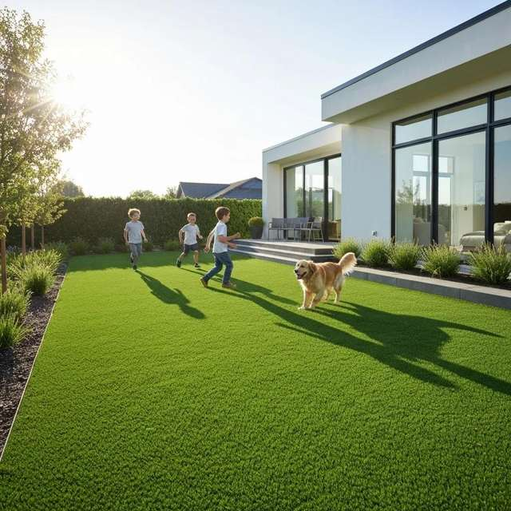
Local GuidesOct 2, 2025 · 6 min read
Louisville's Premier Artificial Turf Installation: Your Ultimate Guide to Synthetic Lawn Solutions
Transform your Louisville lawn with expert artificial turf installation. Explore cost, benefits, and steps to a perfect yard. Find out more!
Read article →
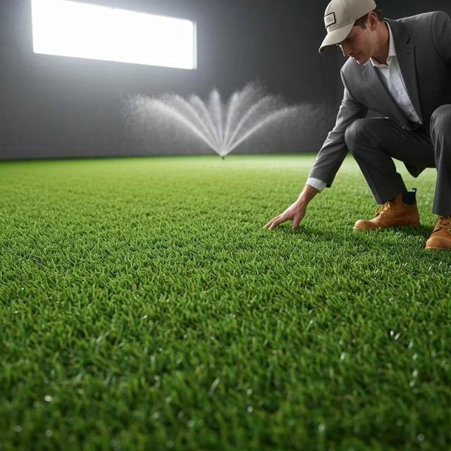
Cost & ValueSep 25, 2025 · 8 min read
Commercial Artificial Turf Installation: Key Benefits, Costs, and Applications for Businesses
Explore commercial artificial turf installation benefits, costs, and uses for businesses. Cut maintenance and boost appeal. Click here to learn more!
Read article →
 Cost & Value
Cost & ValueSep 18, 2025 · 8 min read
Artificial Grass: Your Sarasota Solution for Lush Lawns and Smart Savings
Sarasota homeowners love artificial grass for beauty and savings. Learn how it reduces costs and upkeep. Click here to learn more!
Read article →
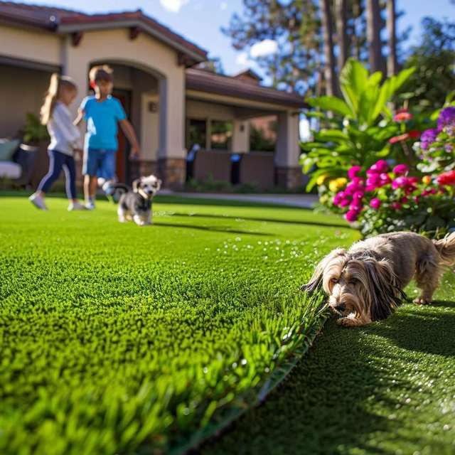
Cost & ValueSep 11, 2025 · 12 min read
Unlock Your Dream Lawn: Affordable Artificial Turf Installation for Lasting Beauty
Transform your yard with affordable artificial turf installation for year-round beauty and low maintenance. Discover expert tips and lasting results!
Read article →
Landscape Turf
Sep 4, 2025 · 11 min read
Unrivaled Resilience: Artificial Turf vs. Natural Grass in Extreme Weather Conditions
Explore how artificial turf vs natural grass performs in extreme weather. Uncover which stays greener, safer, and stronger all year. Find out more!
Read article →
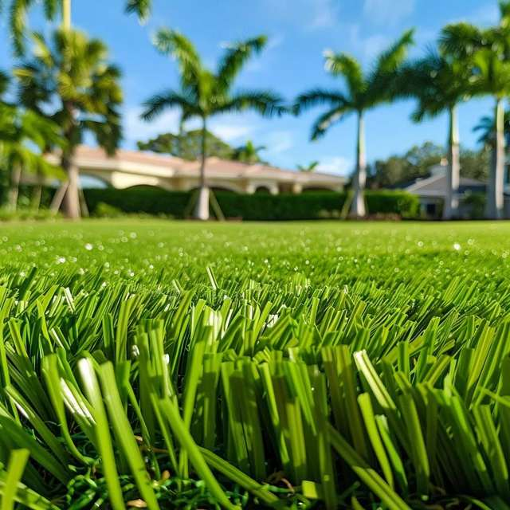
Cost & ValueAug 28, 2025 · 8 min read
Unveiling the True Cost of Artificial Turf in Sarasota: A Detailed Breakdown
Discover the true cost of artificial turf in Sarasota with a detailed breakdown of materials, installation, and savings. Find out more!
Read article →
Cost & Value
Aug 21, 2025 · 12 min read
Unlock Your Dream Lawn: Affordable Artificial Turf Installation for Lasting Beauty & Value
Transform your yard with affordable artificial turf installation for lasting beauty and value. Discover expert tips and lasting results!
Read article →
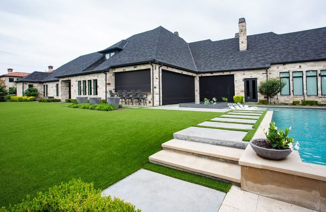
Cost & ValueAug 14, 2025 · 3 min read
Why Is Artificial Turf a Smart Investment for Property Owners?
Discover why artificial turf is a smart investment for property owners. Save water, cut maintenance costs, and boost curb appeal. Read more to learn how!
Read article →
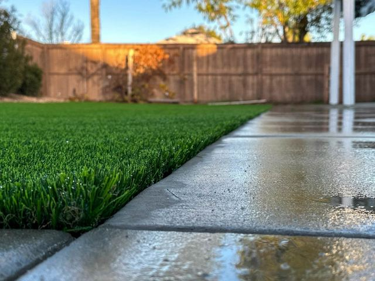
Maintenance & CareAug 7, 2025 · 5 min read
How to Maintain Artificial Turf in Sarasota
Learn how to maintain artificial turf in Sarasota with simple care tips for a lush, low-maintenance lawn all year round. Discover more in our expert guide!
Read article →
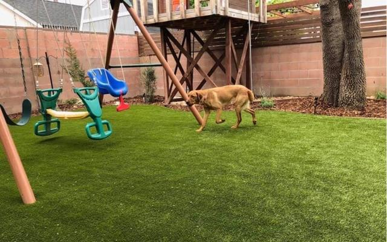
Maintenance & CareJul 31, 2025 · 7 min read
How Artificial Turf Can Save You Thousands in Lawn Care Costs
Save big on lawn care costs with artificial turf! Learn how switching to synthetic grass reduces water, maintenance, and expenses. Find out more today!
Read article →
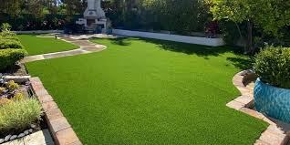
Local GuidesJul 24, 2025 · 3 min read
Transform Your Tampa Backyard
Transform your Tampa backyard with EternaTurf’s lush, low-maintenance artificial turf. Upgrade your outdoor space this summer. Discover more today!
Read article →
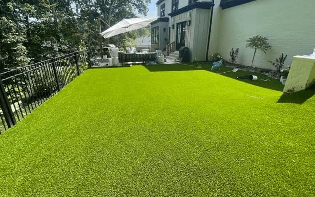
Local GuidesJul 17, 2025 · 3 min read
Is Artificial Turf Suitable for Lexington’s Climate?
Discover if artificial turf can thrive in Lexington’s climate—from hot summers to rainy springs. Learn why turf may be your perfect yard solution. Read more!
Read article →
Sports Turf
Jul 10, 2025 · 2 min read
Why Artificial Turf Is Replacing Natural Grass for Sports Fields in Tampa
Discover why artificial turf is replacing natural grass for Tampa sports fields. Boost playtime, reduce costs, and improve safety. Read more!
Read article →
Local Guides
Jul 3, 2025 · 3 min read
How to Transform a Lifeless Backyard into a Family Oasis in Louisville, KY
Transform your backyard into a stunning family oasis in Louisville, KY with EternaTurf’s expert tips and design ideas. Click here to learn more!
Read article →
Local Guides
Jun 26, 2025 · 6 min read
Is Artificial Turf a Good Option in the Beaufort, SC Climate?
Is artificial turf a good option in Beaufort, SC? Learn how it thrives in heat, humidity, and rain while saving time and money. Read more!
Read article →
Local Guides
Jun 19, 2025 · 2 min read
What to Expect from Artificial Turf Installation Services Near You in Louisville
Make turf installation easy! Learn what to expect from artificial turf installation services near you in Louisville. Click here to learn more!
Read article →
Maintenance & Care
Jun 12, 2025 · 7 min read
How Long Does Artificial Turf Last in Florida’s Climate?
How long does artificial turf last in Florida’s climate? Learn about lifespan, durability, and care tips to make your lawn last for decades.
Read article →
Local Guides
Jun 5, 2025 · 6 min read
Top 10 Reasons for Artificial Turf in Lexington, KY
Discover the top 10 reasons to install artificial turf in Lexington, KY. Save water, cut maintenance, and enjoy a lush lawn year-round. Read more!
Read article →
Local Guides
May 29, 2025 · 7 min read
Top 5 Grass Alternatives for Tampa, FL
Explore the top 5 grass alternatives for Tampa, FL yards in 2025—from turf to native groundcovers. Find the best low-maintenance option. Read more!
Read article →